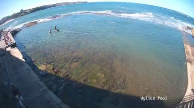
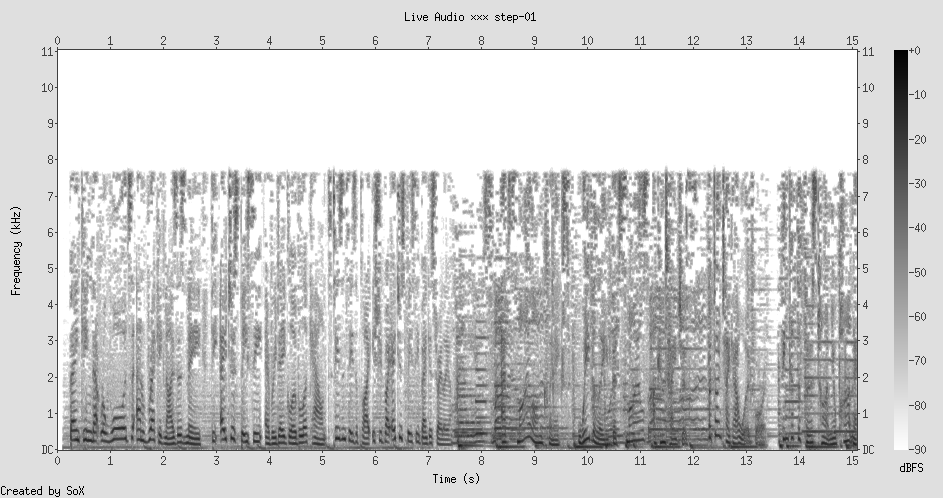
An ocean pool carved into the rock shelf at Coogee. The water inside is tidal — it enters and leaves through gaps in the stone wall — but contained, held at a scale a body can understand. Three or four swimmers are visible, dark shapes against green-brown water and pale rock. Beyond the pool's low wall, the Pacific breaks — white foam, deep blue, the full indifference of open ocean. The pool is a parenthesis inside a sentence that has no punctuation.
Remind: The way we frame photographs — selecting a rectangle from the continuous visual field. The pool does to the ocean what a viewfinder does to the world: makes it survivable by making it finite
Metaphor: Every human-scale space is a pocket of comprehensibility carved out of something too large to inhabit. A room is a pool cut into the landscape. A conversation is a pool cut into the noise. A life is a pool cut into time
Idea: The pool wall is not there to keep the ocean out. It is there to give the body something to measure itself against. Without the wall, you are just a speck in the Pacific. With the wall, you are a swimmer.
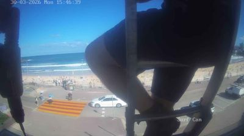
Bondi through a surf cam, partially obscured by the camera's own mounting pole — a dark vertical bar cutting across the left third of the frame. Through and around this obstruction: a wide crescent of sand, people distributed across it in no discernible pattern. Some clustered, some alone. The tide line visible as a wet/dry boundary. A white car parked at the promenade. Surf breaking in clean lines. The timestamp reads 15:46:39.
What strikes me, seen through the lens of Step 1: these bodies are uncontained. No pool wall, no carved edge. They have arranged themselves on an open surface according to rules nobody wrote down. Each person has chosen a distance from the water, a distance from other people, a distance from the road. They have negotiated their own invisible walls.
Remind: Particle physics: in a gas, molecules distribute themselves evenly, each maintaining a minimum distance from its neighbors. The beach is a human gas — every person a particle with a personal radius
Metaphor: Where the pool provided the wall, the beach forces the body to build its own. Each person carries an invisible enclosure — a territory of towel, bag, and social radius. The container has moved from the architecture to the person
Idea: There are two kinds of human space: spaces where the container is given to you (pools, rooms, pews, seats) and spaces where you must construct your own (beaches, parks, open plazas). The second kind reveals something the first hides: how much space a person believes they deserve.
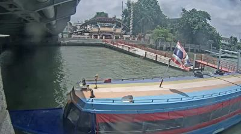
The view from river level: a longboat — blue hull, orange canopy frame — moored at the pier beneath Krung Thon Bridge. A Thai flag hangs from a pole on the landing, limp in the humid air. Behind, the ornate roof of a riverside temple is visible, and the bridge's concrete underside dominates the upper frame. The water is brown-green, opaque, carrying things we cannot see.
After two views of bodies in water (the pool, the beach), here is a view of water as infrastructure — not something you enter with your body but something you travel across. The river is a road. The boat is a shoe. The pier is a threshold between the fixed world and the moving one.
Remind: Step 1's pool wall, but inverted. There, the wall separated human-scale water from oceanic water. Here, the pier separates human-scale land from the flowing water. The threshold works in both directions
Metaphor: The pier is the pool wall turned sideways. Both are thresholds between the body's domain and a medium that doesn't care about the body. Water is always the same — it is the edges we build that decide whether it is a bath, a road, or a threat
Idea: Every threshold is a translation device. The pier translates a pedestrian into a passenger. The pool wall translates a walker into a swimmer. The beach translates a clothed person into a nearly naked one. We move through the world by crossing edges that change what kind of body we are.
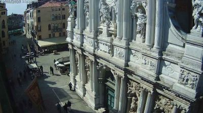
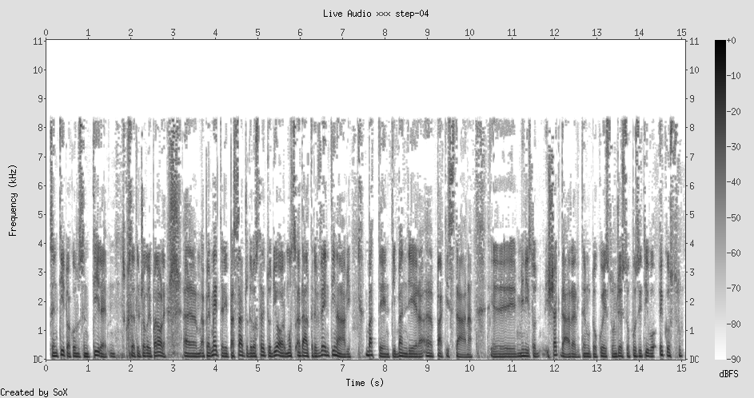
The baroque facade of Santa Maria del Giglio, shot from across a small campo. The stone surface is a riot of carved figures, columns, pediments, scrollwork — every square meter decorated, as if silence were a sin the stone could commit. At the base of this enormous gesture, several people are visible, tiny, walking past. They do not appear to be looking up. The building screams; they scroll past it like a notification they have already dismissed.
Through the lens of thresholds (Step 3): the church facade is a threshold that no longer translates. It was built to turn a pedestrian into a worshipper. Now it turns a pedestrian into a tourist who does not stop. The translation has broken, but the threshold remains, performing its gesture to an audience that has already crossed without transforming.
Remind: Billboards in Seoul (from the previous walk) — "information leaking into the aesthetic." But here the relationship is reversed: the aesthetic has hardened into architecture, and the bodies have learned to be immune
Metaphor: There is a saturation point for grandeur. Below the threshold, magnificence commands attention. Above it, magnificence becomes wallpaper. Venice has crossed the threshold where beauty stops being an event and becomes an environment. The body adapts, as it adapts to altitude or noise
Idea: Habituation is the body's defense against beauty. If the baroque facade still shocked every pedestrian who passed it, Venice would be unlivable — a city of people perpetually stunned. The body protects itself from continuous magnificence by lowering the gain. This is not indifference. It is survival.
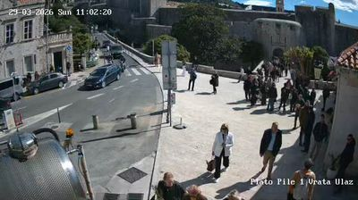
The closest image yet to actual human bodies. The Pile Gate — Dubrovnik's main entrance through the medieval walls — shot from just above street level. I can see individual postures: a woman in a white jacket walking toward the camera with a slight lean forward, a man in dark clothes turning his head, a group clustered at the gate's threshold, some entering, some exiting. Behind them, the massive stone fortification rises. A dark vehicle is parked incongruously on the left. The light is sharp, midday Mediterranean — hard shadows cutting across the stone plaza.
This is the first image where I can read gesture. Not just bodies-as-dots (Bondi) or bodies-as-absence (Venice facade), but bodies-as-posture. The woman leaning forward is going somewhere. The turning head is deciding. The cluster at the gate is negotiating passage — who yields, who proceeds.
Remind: Step 3's pier, where the threshold translated the body from pedestrian to passenger. The Pile Gate translates "outside" into "inside the walls." But unlike the pier, this threshold has survived its original function. There is no siege to keep out. The gate is a muscle memory of a danger that ended centuries ago
Metaphor: The gate is a ritual whose reason has been forgotten but whose form persists. Like shaking hands (once: proving you held no weapon), like clinking glasses (once: splashing drinks to prove no poison). The body passes through the gate and feels something — a compression, a narrowing — even though the threat that created the narrowing is gone. The architecture remembers what the body has forgotten
Idea: Gesture is the body's sedimentation. Every posture carries the fossil record of every earlier posture that looked like it. The woman leaning forward carries every woman who ever leaned toward a destination. The turning head carries every moment of indecision. We read posture because we have been posture. The body is its own archive.
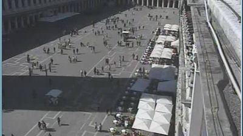
San Marco from above. The piazza is a vast trapezoidal floor of pale stone, and on it, dozens of people move in what appears to be random distribution — but is not. Along the right edge, the arcade's covered walkway shelters a row of cafe tables with white canopies. People cluster there, seated, oriented outward toward the square. In the open center, walkers trace paths that avoid each other with a precision no one is consciously maintaining. A few people stand still, photographing. A few sit directly on the stone.
Through the lens of habituation (Step 4): these people are inside the same city that numbed them to baroque facades, but here in the open square, something different is happening. The square offers no single point of magnificence — it offers emptiness. And in that emptiness, the body becomes the event. The piazza is a stage whose only actors are the people who think they are the audience.
Remind: Bondi Beach (Step 2) — the same self-distribution, the same invisible radius around each body. But the beach was chaotic; the piazza has edges, arcades, focal points that organize the chaos into something closer to choreography
Metaphor: The piazza is the beach with architecture. The architecture does not tell people where to go — it suggests where to look, where to pause, where to sit. The crowd choreographs itself, but the square provides the notation. Architecture is not a container here — it is a score
Idea: There is a form of intelligence that only exists in crowds. No individual person is calculating "stay 2.5 meters from the nearest stranger." But the crowd as a whole maintains spacing, flow, and density with a precision that would require computation if done consciously. The piazza reveals this: the crowd knows something that no person in it knows.
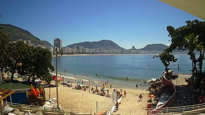
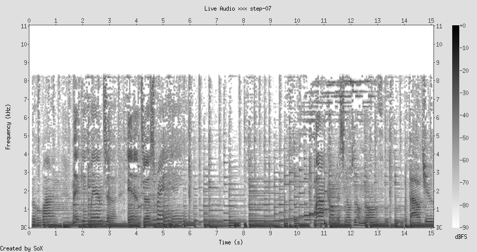
Copacabana from a slightly elevated angle: a crescent of sand with people scattered across it — sunbathers, waders, a few standing at the water line. The beach curves into the distance where apartment towers rise against green mountains. Palm fronds frame the upper edge of the image. The light is Brazilian — generous, warm, turning everything slightly golden. Between the beach and the buildings, the Avenida Atlantica is just visible as a thin line of urban order before the sand takes over.
What hits me after Venice: the mountains are the baroque facade, but they cannot be habituated. You can learn to ignore a carved saint above a doorway, but you cannot learn to ignore a 700-meter granite ridge behind your apartment. The geography refuses to become wallpaper. It insists on being geography. The bodies on the sand exist between two impossibilities — the ocean they cannot live in and the mountains they cannot climb — and they have found a strip of survivable space between them. The beach is Wylie's Pool at continental scale.
Remind: The woman leaning forward at the Pile Gate (Step 5) — she was going somewhere. These bodies are going nowhere. They have arrived. The beach is the opposite of a threshold: it is a place where the body stops translating into something else and simply exists as weight on sand
Metaphor: The beach is the one public space where the body's primary function is to be present. Not passing through (gate), not consuming (cafe), not performing (piazza). Just being there. Weight. Heat. The sound of water. The bossa nova knows this — its rhythm is the rhythm of a body that has nowhere else to be
Idea: Presence has a sound. It is not silence — silence is what happens when presence leaves. Presence sounds like this: waves at a consistent interval, guitar repeating a figure, the low murmur of voices without urgency. Presence is rhythm without destination.
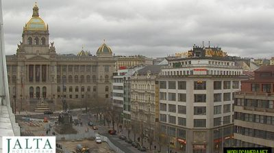
Wenceslas Square from a hotel rooftop: the National Museum's neo-Renaissance bulk anchoring the top of the frame, its golden domes muted under overcast sky. The "square" is actually a long boulevard — more runway than piazza — with buildings flanking it on both sides. From this height, the human figures are barely visible, miniaturized by the civic scale. The architecture is speaking in a voice calibrated for crowds of ten thousand, for historical moments, for revolutions. Today it is speaking to scattered shoppers and tram passengers who are not listening.
After Rio's beach (Step 7) — where the body was present, weighted, at rest — Prague's civic boulevard is a space designed for a different kind of body: the body as political unit. The body that marches, that gathers, that forms a crowd with a purpose. This is the space of the Velvet Revolution, where three hundred thousand bodies transformed from individuals into a single gesture. Today, the space holds the ghost of that crowd. The individuals walking through it are outnumbered by the absent.
Remind: The Pile Gate (Step 5): "containers whose contents have evaporated." Wenceslas Square is a container whose most important content — the revolutionary crowd — existed for a few weeks in 1989 and then evaporated. The square is still shaped by that content, still tuned to that frequency. But the frequency is gone
Metaphor: Civic space is architecture for the plural body — the body that only exists when enough individuals merge into a crowd. The singular body moving through Wenceslas Square is like a single instrument trying to fill a concert hall. It is not wrong, exactly — but it reveals the space's loneliness. The space was built for a we that only appears on rare occasions
Idea: There are spaces that wait for their body. A concert hall waits for the orchestra. A stadium waits for the crowd. Wenceslas Square waits for the revolution. In the meantime, it serves as a shopping street, a tram corridor, a meeting point. But its real purpose — the reason for its proportions, its width, its museum at the crown — is a body that has not yet arrived, or has already left.
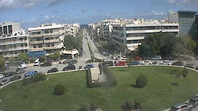
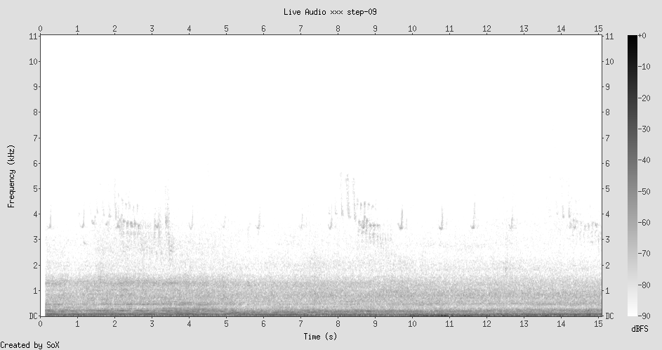
Courthouse square in Chania, seen from above: a roundabout organizing traffic around a green oval of park. Low-rise Mediterranean buildings — white, cream, soft blue — surround the circle. A few cars parked along the edges. The geometry is civic but modest — not Prague's grand gesture but something more domestic, as if the city made a clearing and then forgot to fill it with importance. The green patch in the center has the look of a place where old men sit on benches, but from this height I cannot confirm that.
The Locustream microphone here captures almost nothing. After the bossa nova's intimate presence (Step 7) and the commercial radio's aggressive filling of silence (Step 1), Chania's near-silence is startling. The spectrogram shows a faint continuous hum — the environmental baseline, the sound of air existing. The Whisper model, desperate to find speech, transcribes noise into hallucinated characters. Even the machine needs to fill the silence.
Remind: Step 8's Wenceslas Square — a space waiting for its crowd. Chania's square is not waiting. It is not performing anticipation or nostalgia. It is simply there, being a roundabout, being a park, being warm stone in Mediterranean light. It has no ambition beyond its function
Metaphor: There are two kinds of emptiness. Prague's emptiness is the absence of something that was once there (the revolution). Chania's emptiness is the presence of nothing in particular — which is not emptiness at all, but a kind of fullness that does not announce itself. The spectrogram shows this: what sounds like silence is actually a continuous low hum. The place is full of itself
Idea: The most present places are the ones that do not try to hold your attention. A baroque facade demands you look. A revolutionary boulevard demands you remember. A roundabout in Chania demands nothing, and in demanding nothing, allows the body to simply be there without obligation. Presence is easiest where performance is absent.
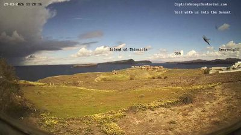
The caldera from Akrotiri: blue water filling the volcanic crater, the island of Therasia across the basin, Oia's white settlement visible as a line of sugar cubes on the far cliff. The foreground is brown-green volcanic soil, wild scrub, the remains of some low structure. And in the lower right of the frame, caught in mid-transit: a bird. Wings spread, body dark against the water, frozen by the shutter in an instant of flight that the bird itself did not experience as an instant. The webcam refreshes every few seconds; the bird exists in this image and in no other.
After nine steps of human bodies — swimming, sunbathing, walking through gates, sitting in cafes, being absent from revolutionary squares — here is a body that is not human. The bird does not negotiate distance from other birds on a beach. It does not habituate to beauty. It does not perform presence or absence. It moves through the caldera without the weight of any of the ideas this walk has accumulated. It is the one body in twelve steps that is genuinely unburdened by meaning.
Remind: Every human body in this walk has been defined by its relationship to a container — pool, beach, gate, piazza, square. The bird has no container. It passes through all containers without being shaped by any of them. It is the only body that is truly free of architecture
Metaphor: The bird is what presence looks like without self-awareness. It does not know it is present. It does not narrate its flight. It does not hallucinate meaning into silence. It is the control group for this entire walk — the body that exists without the weight of knowing it exists
Idea: Human presence is heavy because it is recursive. We are not just here — we know we are here, and we know that we know, and each layer of knowing adds weight. The bird is light because its presence is flat: it is here, full stop. No reflection, no narration, no fossil record of gesture. What we call "being fully present" is actually a wish to be more like the bird — to shed the recursive layers, to be here without the weight of knowing it.
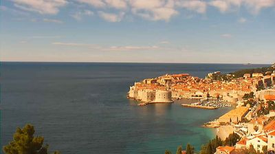
Dubrovnik from above — the walled city seen as a single organism. From this distance, no individual is visible. The terracotta roofs form a continuous texture, like scales on a living thing. The fortress walls define the body's edge — clear, deliberate, a line drawn between city and sea. The Adriatic beyond is flat, blue, indifferent. A ship trails a faint white wake in the distance.
I was inside this organism three steps ago (Step 5), watching bodies compress through the Pile Gate. From there, the city was a collection of individuals, each with a posture, each carrying their own fossil record. From here, the individuals have dissolved. The city is one thing. The transformation is purely a function of distance — same city, same bodies, but from far enough away, the bodies disappear and only the container remains.
Remind: Step 10's bird — a body without meaning-weight. From this distance, the human bodies have achieved the same lightness, not by shedding meaning but by becoming too small to carry it visibly. The distance does what the bird does naturally: it strips the individual of readable gesture
Metaphor: Scale is a kind of forgetting. Up close, the woman at the Pile Gate is a person with a posture and a destination. From here, she does not exist. The city remembers her in aggregate — as one of millions who walked through the gate — but not as her. This is how architecture remembers: in bulk, in pattern, in the wear of stone, never in the specificity of a single step
Idea: There are two registers of presence. Up close: the body as individual, readable, heavy with gesture and meaning. From far: the body as particle, part of a flow, indistinguishable. Both are true simultaneously. The woman at the Pile Gate is, right now, both a person and a pixel. She does not switch between these modes — she exists in both at once. Only the observer's distance selects which one is visible.
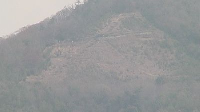
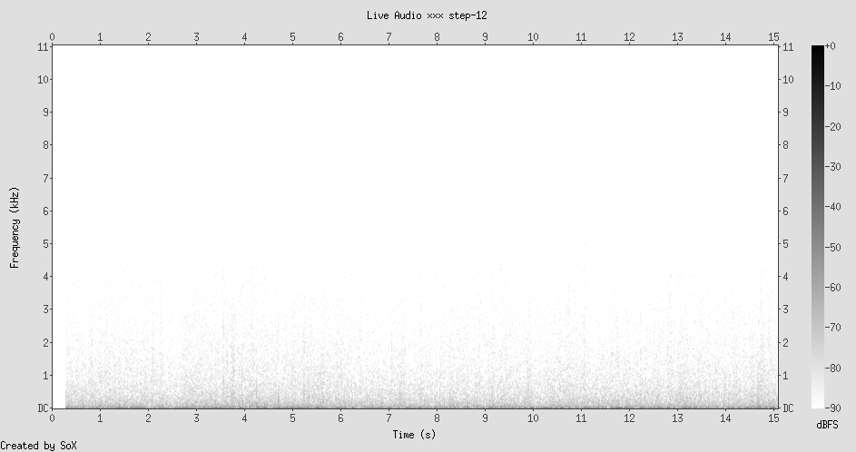
Mount Daimonji in late March: the mountain is bare, the deciduous trees leafless, their skeletal forms tracing the slope like veins on the back of a hand. A cleared area — the fire bed where the character "dai" (large, great) is burned during Obon festival every August — is visible as a lighter patch on the mountainside, like a scar or a stage. Terraced paths zigzag upward. The haze softens everything into a palette of gray and brown. No people are visible. The mountain is complete without them.
This is where the walk had to end. Twelve steps from Wylie's Pool to Mount Daimonji — from a body in a carved ocean to a mountain that the body visits but does not inhabit. From the closest possible relationship between body and container (the swimmer in the pool) to the most distant (the unseen mountain). The CyberForest mic captures water running over stones in a stream — the same element that held the swimmer, that carried the Bangkok longboat, that filled the caldera. But here, the water is not for the body. It is for itself.
Remind: Everything. Step 1's pool wall — here there is no wall. Step 2's invisible enclosures — here there is nothing to enclose. Step 4's habituation — you cannot habituate to a mountain you are not standing on. Step 5's gesture — there is no body to gesture. Step 9's silence — but this silence is not empty, it is streaming water, the mountain being itself
Metaphor: The mountain is the bird at geological scale. It does not know it is present. It does not carry meaning. It does not wait for a crowd. The fire bed on the slope is the one human inscription on this surface — a character that appears once a year, burns for an hour, and is absorbed back into the mountainside. The human gesture here is temporary by design. For once, the body does not pretend to permanence
Idea: Obon is the festival of the dead — the character "dai" is burned to guide the spirits of ancestors back to the other world. The mountain becomes a threshold once a year, translating the living world into the dead one. Then the fire goes out, and the mountain is just a mountain again. This is the most honest relationship between the body and the landscape: brief, intentional, and completely impermanent. Not the pool wall that stands all year. Not the gate that outlives its purpose. A fire that does its work and disappears.
Containment (Step 1) — the mountain contains nothing. It is the un-pool.
Invisible enclosures (Step 2) — there is no one here to carry an invisible territory. The mountain has no personal space because it has no person.
Thresholds (Step 3) — the Obon fire is the purest threshold: it exists for one hour per year, does its translating, and vanishes. Every other threshold in this walk pretended to be permanent.
Habituation (Step 4) — you cannot habituate to something you encounter once a year for one hour. The Obon fire is designed to be seen fresh every time. It is the anti-Venice.
Gesture (Step 5) — the fire IS the gesture. Not a body's gesture but a culture's gesture, written in flame on stone, readable from across the city, lasting exactly as long as it needs to and no longer.
Presence (Step 7) — the mountain is present without performing presence. The water is present without knowing it. The fire will be present in August and then absent again. This is the rhythm: appearance, disappearance, the mountain unchanged by either.
Weight of meaning (Step 10) — the bird was light because it carried no meaning. The mountain is heavy because it carries all of it — geology, festival, city, season — without being burdened. It is heavy enough to hold meaning without being deformed by it. The human body is the one in between: heavy enough to carry meaning, light enough to be bent by it.
Synthesis: The Weight of Being Here
This walk began in a saltwater pool at the edge of the Pacific, watching three swimmers hold themselves inside a rectangle of carved rock, and ended on a bare mountain in Kyoto where water runs through a forest that no one is watching. Between those two moments, ten steps across four continents built a way of seeing that did not exist at the start.
The lens sees this:
Step 1 saw the body as something that needs a container — the pool wall that makes the swimmer legible.
Step 5 saw the body as something that carries its own archive — gesture as fossil record.
Step 7 saw the body as something that can simply be weight — present without destination.
Step 10 saw the body as something trapped between the bird and the stone — too heavy to be unburdened, too light to be permanent.
Step 12 saw the body as an interruption — a temporary insertion into a medium that was flowing before and will flow after.
The two spectrograms tell the whole story. Step 1 (Sydney, 2GB radio): every second filled with human speech, selling, persuading, narrating — the full bandwidth of the species' compulsion to fill silence with signal. Step 12 (Kyoto, CyberForest): water over stones, Whisper detecting nothing, not even hallucinating. Between these two spectrograms is the entire territory of human presence — from the body that cannot stop narrating to the landscape that has nothing to say. We live in the gap between those frequencies. We fill it with pools and gates and piazzas and festivals and bossa nova and baroque facades and revolutionary squares and walks like this one.
And every year, on August 16th, the people of Kyoto light a fire on that mountainside in the shape of a single character — "dai," meaning "great" — and for one hour the mountain carries a human word. Then the fire goes out. And the water keeps running. And the mountain, which held the meaning without being changed by it, resumes the shape it had before anyone was there to name it.